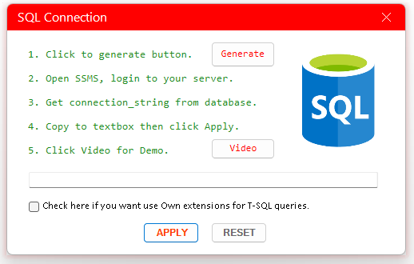

Sử dụng hộp thoại SQL Connection, bạn đọc click vào [Video] button để xem chi tiết các bước thiết lập.
Ngoài cung cấp khả năng kết nối tới SQL Server, AUExpress Tools còn hỗ trợ các tiện ích mở rộng Truy vấn trên Excel.
Nếu bạn muốn sử dụng, hãy tích vào checkbox 'Use Own Extension'.
Điều này có thể làm thay đổi Database của bạn nhưng không ảnh hưởng tới dữ liệu gốc.
Nếu không sử dụng, bạn có thể dùng truy vấn TSQL thuần túy hoặc các tiện ích đã có của bạn để thực hiện truy vấn.
VD: lấy toàn bộ dữ liệu từ Persons bằng truy vấn SQL thuần túy.

Xem video Demo.
Related function
SQL Truy vấn bảng dữ liệu cố định dựa vào câu lệnh SQL.
XQUERY Truy vấn dữ liệu giữa nhiều bảng dựa vào câu lệnh SQL.
PIVOT Tương tự chức năng PIVOT trong Power Query.
Return to Home